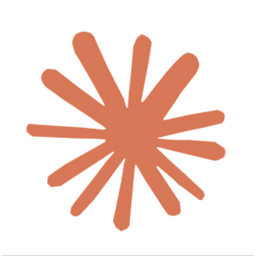
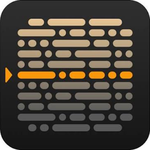

כלים דיגיטליים בסיסיים למנחים ומנחים ראשיים
תאריך: 8 באוקטובר 2026
הכלים שבהם השתמשנו בשיעור, והכלים מהמעבדה. לכולם יש גרסה חינמית שמספיקה כדי להתחיל היום.
היי לכולם,
צירפתי לכם כאן את כל מה שצריך מהמפגש, במקום אחד, כדי שתוכלו לחזור אליו בכל זמן ולעבוד ממנו בקצב שלכם.
מה תמצאו במסמך:
- שתי משימות: משימת התנסות לשבוע הקרוב (העלאת סרטון ראשון ליוטיוב והוספת כתוביות), ומשימת הכנה למפגשים הבאים (טקסט אישי ועוצמתי שאיתו נעבוד)
- הסרטונים מהשיעור, בגרסה רוחבית ובגרסה אנכית לרשתות
- יוטיוב צעד אחר צעד: איך מעלים סרטון, איך מוסיפים ומתקנים כתוביות בעברית, ואיך מתמצאים ב-YouTube Studio, עם שרטוט פשוט לכל שלב
- תהליך יצירת סרטון: הצעה לשבעה שלבים, מהרעיון ועד השיתוף
- אפשרויות צילום: מצלמת מחשב, טלפון על חצובה או ביד, ומה זה טלפרומפטר ולמה הוא עוזר
- ארגז הכלים: כל הכלים שבהם השתמשנו, וכלים ליצירה מהמעבדה, כולם בגרסה חינמית
שאלות? אני כאן. בהצלחה,
שגיא
העלאת סרטון והוספת כתוביות
פתחו ערוץ. העלו סרטון של חצי דקה, אפילו מהטלפון, כלא רשום. היכנסו לכתוביות.
המכונה כתבה את הכתוביות, אבל השם שלכם על הסרטון. של מי הטעות?
טקסט אישי ועוצמתי
בחרו או כתבו טקסט אישי ועוצמתי. אפשר גם לבחור הרצאה משמעותית מהרצאות TED.
הכי חשוב: שיהיה אותנטי. משהו שאתם באמת מאמינים בו.
איתו נעבוד במפגשים הבאים, ונהפוך אותו לתוכן דיגיטלי שלכם, כמנחים ומנחים ראשיים.
הסרטונים מהשיעור
לוחצים על הסרטון כדי לנגן. אפשר גם לפתוח אותו בחלון נפרד ולהוריד.

הסרטון נוצר כולו עם Claude, בשיתוף כלים דיגיטליים נוספים שחוברו ל-Claude וקיבלו ממנו הנחיות (פרומפטים).יוטיוב, צעד אחר צעד
שלושה דברים בסיסיים: להעלות סרטון, להוסיף כתוביות, ולהכיר את YouTube Studio. שמות הכפתורים כתובים כמו שהם מופיעים על המסך.
1מעלים סרטון
- נכנסים ל-studio.youtube.com. אין עדיין ערוץ? בתמונת הפרופיל ביוטיוב בוחרים Create a channel
- למעלה לוחצים Create, ואז Upload videos, וגוררים את הקובץ
- כותבים כותרת ותיאור קצר
- ב-Audience עונים אם הסרטון מיועד לילדים
- Show more, ובשפת הסרטון בוחרים עברית. בלי זה אין כתוביות בעברית
- ב-Visibility בוחרים Unlisted ולוחצים Save
2מוסיפים כתוביות
- מחכים שהכתוביות האוטומטיות יהיו מוכנות. לפעמים דקות, לפעמים יותר
- ב-Studio, בתפריט שבצד, בוחרים Subtitles, ואז את הסרטון
- ליד הכתוביות בעברית לוחצים Duplicate and edit
- קוראים לצד הסרטון, ומתקנים שורה אחרי שורה. שימו לב במיוחד לשמות, למילים באנגלית ולקטעים מהירים
- לוחצים Publish. הגרסה המתוקנת היא זו שהצופים יראו
3מכירים את YouTube Studio
- Dashboard: מה קורה בערוץ, במבט אחד
- Content: כל הסרטונים. מכאן משנים כותרת ונראות
- Analytics: צפיות, זמן צפייה ממוצע, ומאיפה הגיעו הצופים
- Customization: תמונת פרופיל, באנר ותיאור הערוץ
- בטלפון: אפליקציה נפרדת בשם YouTube Studio, לבדיקה מהירה ולמענה לתגובות
תהליך יצירת סרטון (הצעה)
שבעה שלבים, מהרעיון ועד השיתוף. כל שלב, והכלי שאפשר לעשות איתו אותו.
רעיון
מה הצופה ידע לעשות בסוף? משפט אחד.
תסריט
Claude
שורה אחרי שורה, מוכן לקריאה בקול.
צילום עם טלפרומפטר
Google Vids
הטקסט רץ מול העיניים, ואני מסתכל למצלמה.
הקלטות מסך
מובנה במחשב ובטלפון
כל לחיצה, לאט, עם עצירה לפניה.
עריכה
CapCut
חיתוך, זום על הכפתור, מוזיקה שקטה.
העלאה וכתוביות
YouTube Studio
כתוביות אוטומטיות בעברית, ואז תיקון.
בדיקה ושיתוף
קודם "לא רשום", בודקים, ורק אז ציבורי.
אפשרויות צילום, וטלפרומפטר
איך מצלמים את עצמכם מדברים, ואיך קוראים טקסט בלי לאבד קשר עין עם המצלמה.
מה זה טלפרומפטר, ולמה צריך אותו?
טלפרומפטר הוא מסך שהטקסט שלכם גולל עליו לאט, ממש ליד עדשת המצלמה. ככה אתם קוראים את מה שכתבתם, אבל נראים כאילו אתם מדברים ישר אל הצופה.
בלי טלפרומפטר, העיניים בורחות לדף או למסך בצד, והצופה מרגיש את זה מיד. עם טלפרומפטר, נשאר קשר עין, ומספיקים פחות טייקים כדי לומר את המסר בדיוק כמו שתכננתם.

הטלפרומפטר של Creative Content
אפליקציה שיצרתי במיוחד לקורס, עם Claude
נפתח מהטלפון ומהמחשב. מדביקים את הטקסט, והוא רץ מעל המצלמה הקדמית בזמן שאתם מצלמים. כל פסקה היא טייק נפרד. הסרטון נשמר אצלכם בטלפון ולא עולה לשום מקום.
טיפ: בטלפון, הוסיפו את הקישור למסך הבית, ואז הוא נפתח כמו אפליקציה.
מצלמת המחשב
- יושבים מול המחשב, והמצלמה המובנית מצלמת אתכם
- פותחים את הטלפרומפטר באותו מחשב ומדביקים את הטקסט
- מקטינים את חלון הטקסט ומצמידים אותו לחלק העליון של המסך, קרוב למצלמה
- מקליטים, ומסתכלים לעדשה
טלפון על חצובה
- מעמידים את הטלפון על חצובה בגובה העיניים
- מצלמים במצלמה הקדמית, עם הטלפרומפטר של הקורס על אותו מסך
- או: מצלמים במצלמה האחורית, האיכותית יותר, והטקסט רץ על מחשב שמונח ממש מתחת לטלפון
טלפון ביד
- מחזיקים את הטלפון בשתי ידיים, קרוב לגוף, כדי שהתמונה לא תרעד
- מצלמים במצלמה הקדמית, עם הטלפרומפטר על המסך
- מתאים לסרטון קצר, לסטורי או לרילס
מחשב או דף כתוב
- אפשר פשוט להניח מחשב פתוח, או דף כתוב, ממש מתחת למצלמה
- קוראים משפט, מרימים את המבט לעדשה, ואומרים אותו
כלים דיגיטליים בסיסיים
לחצו על כרטיס כדי לפתוח את הכלי.
כתיבת רעיונות ותסריטים, שורה אחרי שורה, ובניית אנימציות וכותרות קצרות.
טלפרומפטר מובנה והקלטה של מצלמה, או מצלמה ומסך יחד. למדנו אותו בשיעור 2.
עריכת וידאו במחשב ובטלפון. באפליקציה בטלפון יש גם טלפרומפטר מעל המצלמה הקדמית.
טלפרומפטר בדפדפן, בלי הרשמה. מדביקים טקסט, והוא גולל. מצלמים במכשיר אחר.
במק: Cmd+Shift+5. בווינדוס: Win+Alt+R. בטלפון: הקלטת המסך מהתפריט המהיר.
העלאה, כתוביות בעברית, ונתונים. בטלפון: אפליקציה נפרדת בשם YouTube Studio.
מהמעבדה: יוצרים בחינם
טעימות. כל כלי נותן כמה יצירות חינם ביום או בחודש, מספיק כדי לנסות ולהבין מה אפשר.
תמונה מטקסט, להכניס את עצמכם לתמונה ולהחליף רקע, להחליף אובייקט, אותה דמות מכמה זוויות.
מתמונה לווידאו: מעלים תמונה, מתארים תנועה, ומקבלים קליפ קצר.
וידאו מטקסט או מתמונה. חלופה ל-Kling, זמין גם בתוך CapCut.
אווטאר מדבר: דמות שמקריאה טקסט שכתבתם. רק עם הפנים והקול שלכם.
יצירת תמונות. נסו לבקש תמונה עם כיתוב בעברית, והשוו ל-Nano Banana.
כותרת מונפשת או אינפוגרפיקה להסבר. התוצאה רצה בדפדפן; מקליטים את המסך כדי להכניס לסרטון.
שיר או מוזיקת רקע מתיאור במילים. כותבים סגנון ונושא, ומקבלים שיר שלם עם שירה.
הקראה בקול טבעי, דיבוב לשפות אחרות ואפקטים קוליים. מדביקים טקסט ומקבלים קובץ שמע.